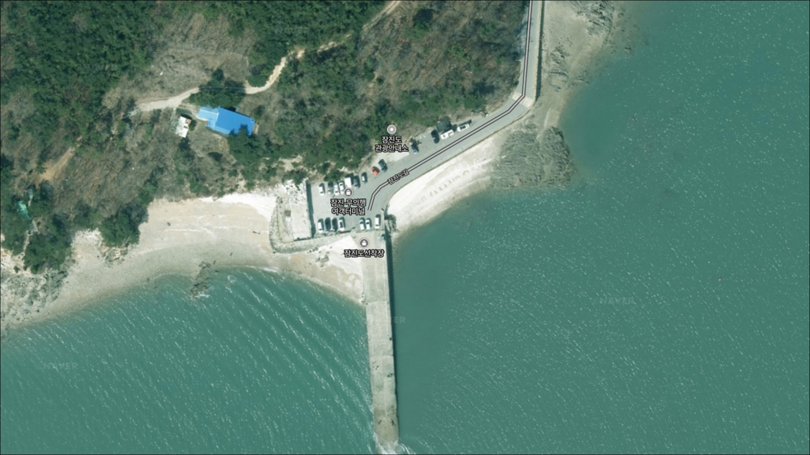
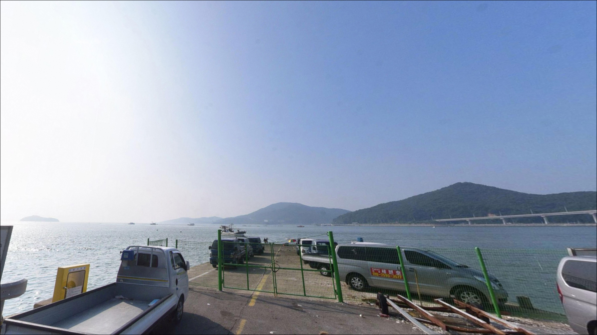
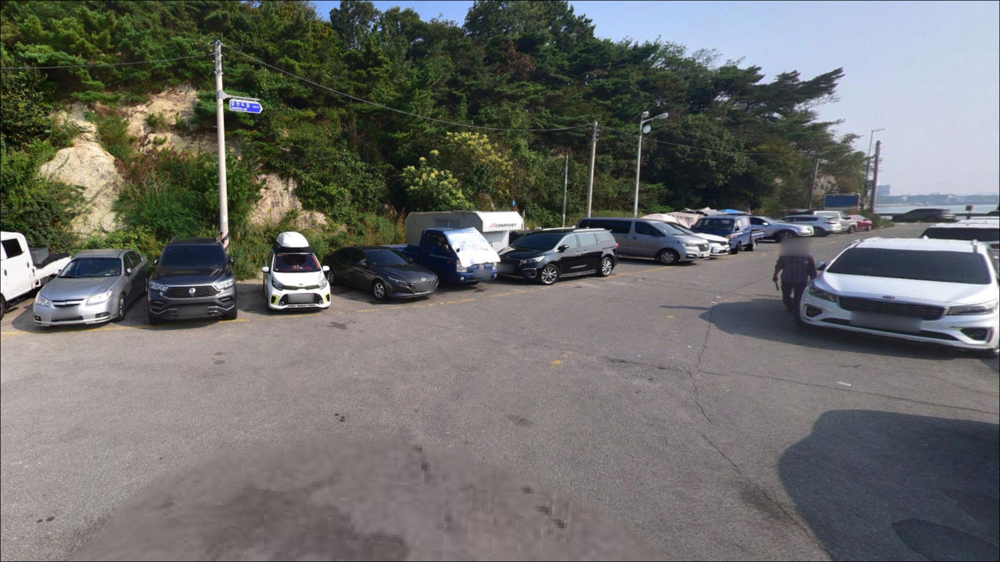
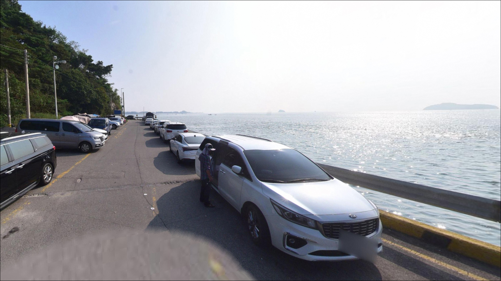
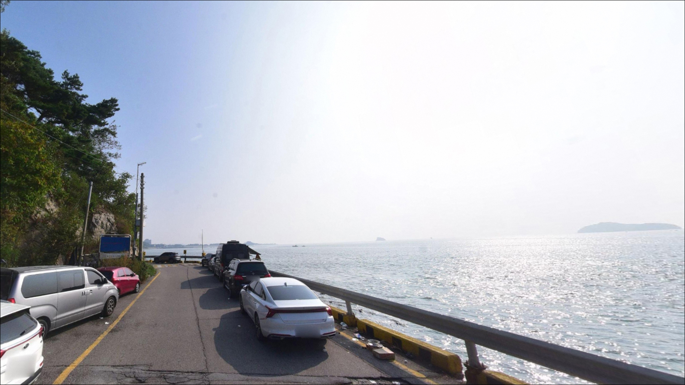
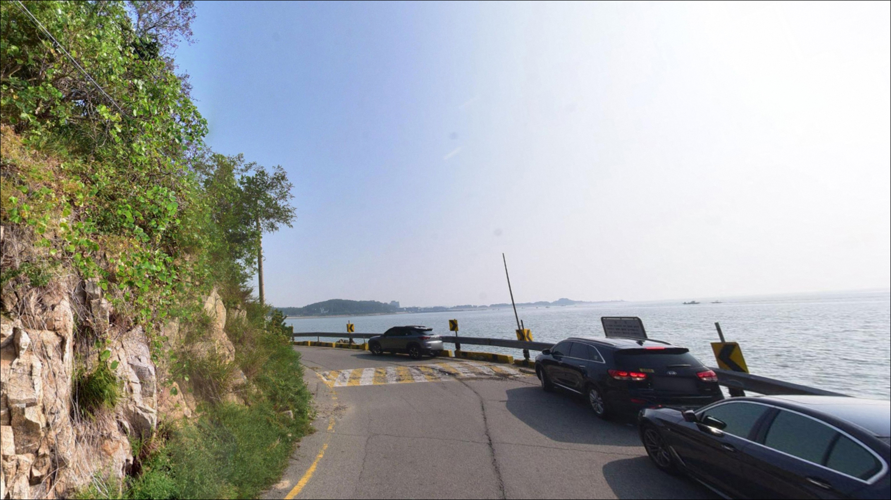
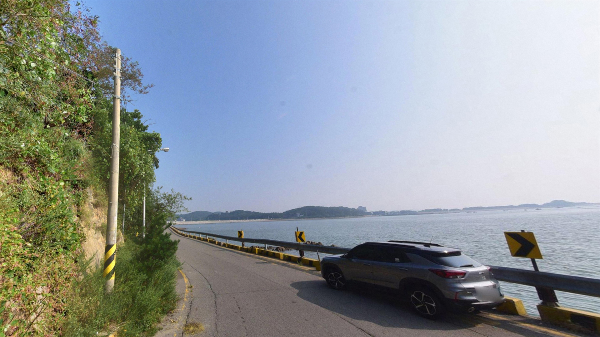
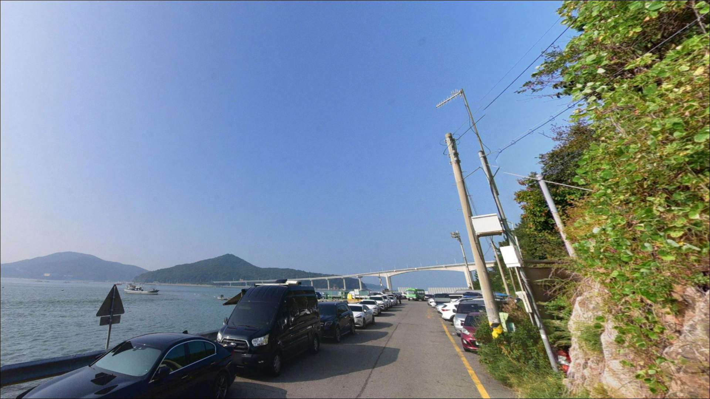
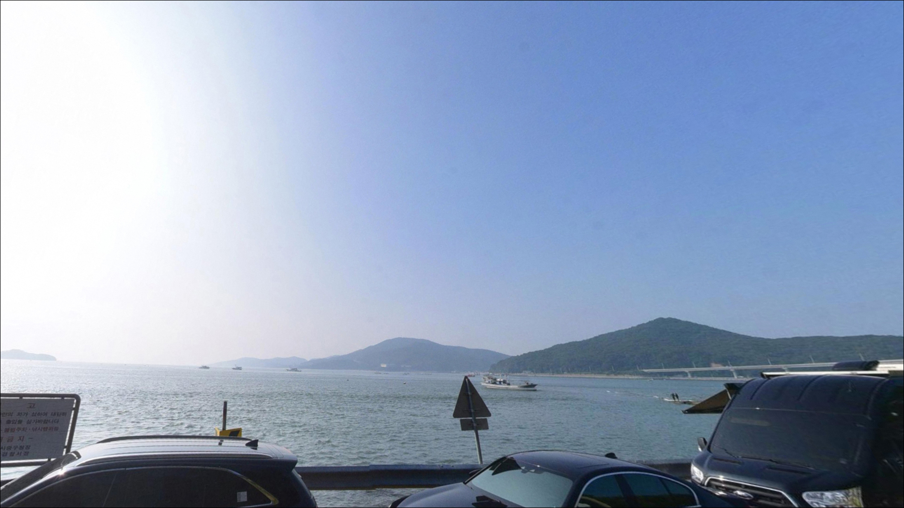

잠진도선착장, 잠진도 인천 중구 노을빛이 스며드는 차박, 낚시 겸용 감성 장소


포인트 안내
잠진도선착장
인천 중구 덕교동 103-21
주말 낮에 잠진도선착장으로 곧장 진입하면
선착장 주변 간이 주차 공간이 이미 찬 상황을
자주 맞닥뜨립니다.
채비를 꺼내기도 전에 차를 돌려야 하는 상황은,
무의대교 공영주차장을 포함한
주차 동선을 사전에 정해두면
충분히 피할 수 있습니다.
이 글은 잠진도선착장의
진입 여건, 주차 후보, 낚시 스타일별 공략 조건,
물때 판단 기준에 집중합니다.
조황 단정이나 특정 어종 보장은
이 글의 범위에 포함되지 않습니다.

1. 진입 전 주차 동선을 미리 정해야 하는 포인트
잠진도선착장은 영종도 남측 해안도로를 따라
잠진도길로 진입하는 구조입니다.
도로는 포장되어 있으며
승용차와 소형 SUV 기준으로
접근에 큰 어려움은 없는 편입니다.
다만 잠진도길 일부 구간은 폭이 좁고
주말 성수기에는 차량 통행이 몰리는 편이라
진입 시각에 따라 소요 시간이 달라질 수 있습니다.
선착장 주변에는 간이 주차 공간이 있지만
선착장 부지 자체가 작아
낚시 차량이 집중되는 낮 시간대에는
여유 있는 편이 아닙니다.
밤늦게 진입하면 공간이 생기는 경향이 있으며,
출발 시각을 조율하는 것도
현실적인 선택지 중 하나입니다.
선착장에서 직선 거리로 약 2.5km 지점에
무의대교 공영주차장이 있습니다.
하루 주차료가 4천 원 수준이며
주차 여건이 안정적인 편입니다.
인근 석축 연안에서 낚시도 가능해
잠진도 선착장이 여의치 않을 때의 대안 거점으로
미리 파악해두면 유용합니다.

2. 차박 환경 평가와 야간 체류 여건
잠진도선착장은 관광객과 낚시객이
꾸준히 드나드는 지역에 속합니다.
2019년 무의대교 개통 이후 여객선 운항이 중단되고
낚시·관광 거점으로 기능하고 있어,
완전한 노지 분위기보다는
차량 통행과 인적이 어느 정도 있는
해안 관광·낚시 포인트 분위기에 가깝습니다.
선착장 주변에는 최소한의 시설 조명이 있는 편이지만,
방파제 끝단 구간은 어두운 영역이 생길 수 있어
야간 낚시 시 개인 헤드랜턴 준비는 필수입니다.
공항과 가까운 영종도 해안 특성상
항공기 소음이 간헐적으로 들리는 환경이라,
낚시 대기형 차박에 더 잘 어울리는 여건입니다.
드론 촬영은 공항 인근 비행금지구역에 해당하므로
이 포인트에서는 불가합니다.


3. 주변 편의시설 및 인프라 현황
잠진도선착장에서 약 2~3km 거리의
을왕리해수욕장 방면에는
세븐일레븐, GS25, CU, 이마트24 등
편의점이 다수 운영 중입니다.
식수, 얼음, 간단한 낚시 소품은
이 방향에서 보충할 수 있습니다.
바지락 칼국수·조개구이·횟집 식당가도
을왕리 방면에 형성되어 있어
출조 전후 동선 활용이 가능합니다.
무의대교 공영주차장 인근 석축 연안에는
최신식 화장실이 운영 중입니다.
잠진도선착장 자체에서 화장실 이용이
어려울 수 있으므로,
장시간 체류를 계획한다면
무의대교 공영주차장 방향을 생리 문제 해결 동선으로
미리 파악해두는 편이 좋습니다.
인천국제공항 방향 10km권 이내에는
대형 마트와 응급 의료 시설이 있습니다.
비상 상황 발생 시 이동 경로를
출발 전 간단히 확인해두는 것이 기본 준비입니다.

4. 출조 전 반드시 챙겨야 할 준비사항
잠진도선착장 방문 전 가장 먼저 확인할 것은
물때입니다.
영종도와 무의도 사이 해협 구간에 위치한 특성상
조수간만의 차가 크고 조류 변화가 뚜렷한 편입니다.
원투낚시는 물때 영향을 비교적 덜 받아
하루 종일 운용이 가능한 자리이지만,
주꾸미·갑오징어 에깅은 중날물 이후 간조 방향 시간대에
집중하는 것이 유리한 편입니다.
바다타임에서 덕교동 기준 물때를 확인하고
낚시 스타일에 맞는 타이밍을
출발 전에 계산해두는 것이 기본 준비입니다.
기상청 해상예보도 당일 아침
다시 한번 확인하는 편이 좋습니다.
방파제 끝단과 젖은 석축 구간은
미끄럼 사고가 생기기 쉬운 지점이라
우천 또는 파고가 높은 날에는
접근 자체를 재고하는 것이 안전합니다.
봉돌과 채비는 여분을 넉넉히 챙기는 편이 좋습니다.
원투낚시 특성상 봉돌 소모가 생길 수 있으며,
구명조끼는 야간낚시 시 필수 착용 장비입니다.

5. 지형 기반 낚시 여건 분석
잠진도선착장의 방파제 길이는 약 100m 수준입니다.
선착장은 영종도와 무의도 사이 수로 구간에 위치해
방파제 양옆으로 외해가 조망되는 구조이며,
조류 흐름이 비교적 분명하게 나타나는 편입니다.
수로를 따라 이동하는 회유성 어종이
선착장 주변을 지나는 패턴도 있습니다.
간조 시에는 선착장 주변 연안에
갯벌이 드러나는 구간이 생깁니다.
수심은 선착장 안쪽보다 끝단 방향으로 갈수록
깊어지는 경향이 있으며,
수로 방향으로 열린 구간에서는
수심 변화가 있는 채널 경계가
형성될 가능성이 있습니다.
이 경계선 부근이 원투 채비를 보내기 좋은 구간입니다.
선착장 구조물 주변의 석축과 이형블록 구간은
어종의 은신처 역할을 합니다.
이 포인트 최신 조황은 출조 전에 꼭 검색해 보시기 바랍니다.


6. 이 포인트에 어울리는 낚시 스타일
이 포인트에서 가장 무난하게 운용할 수 있는 방식은
원투낚시입니다.
방파제 끝단에서 외해 방향으로 장타를 보내면
서해 연안 특성상 평탄한 바닥 구간이 이어지며,
참갯지렁이·청갯지렁이 채비를 활용한 쳐박기 방식이 잘 맞습니다.
물때 영향을 비교적 덜 받아 낮부터 야간까지
일관된 운용이 가능한 방식입니다.
망둥어, 우럭, 숭어, 붕장어 등이
이 지형에서 기대해 볼 수 있는 어종입니다.
가을 시즌에는 주꾸미와 갑오징어 에깅이 활발한 편입니다.
중날물 이후 간조 방향으로 진행되는 시간대에
선착장 연안을 천천히 워킹하며
갯벌과 연안 경계선 부근을 집중 탐색하는 방식이 어울립니다.
루어낚시는 무의대교 교각 주변과
수로 흐름이 있는 선착장 가장자리 구간에서
시도해볼 만합니다.
지그헤드와 웜 채비를 활용해
구조물 근처 바닥권을 탐색하는 방식이
이 포인트 지형 조건에 맞으며,
광어도 이 지형에서 기대해 볼 수 있는 어종입니다.

7. 대안 포인트와 플랜 B 동선
잠진도선착장 주차가 여의치 않거나
조황이 기대에 못 미칠 때
가장 먼저 이동할 대안은
거잠포선착장입니다.
잠진도와 같은 해안선 상에 위치한 방파제·선착장 포인트로,
망둥어와 우럭 조과가 알려진 곳이며
접근 동선이 짧아 이동 부담이 적습니다.
을왕리해수욕장 좌우의 갯바위와 선착장 구간도
대안으로 활용할 수 있습니다.
잠진도선착장보다 규모가 크고
주변 편의시설이 풍부해
처음 방문하거나 동반자가 있을 경우
기점 포인트로 무난한 여건입니다.
삼목항은 영종도 대표 바다낚시 포인트로
잠진도선착장과 함께 낚시 매체에서 다뤄지는 곳으로,
조황을 비교하며 이동 여부를 결정하는 데 참고할 수 있습니다.
차박을 메인으로 계획한다면
무의대교 공영주차장 인근 석축 연안이
잠진도선착장보다 안정적인 선택입니다.
최신식 화장실이 운영 중이며
주차장 외부 석축 구간에서는 낚시와 취사가 가능합니다.
주차장 내부에서는 낚시·캠핑이 금지되어 있으므로
구역 구분을 현장에서 확인하는 것이 우선입니다.

주차 동선 하나 더하면
잠진도선착장이 달리 보입니다
원투낚시를 기본으로 하되
가을 시즌에는 주꾸미·갑오징어 에깅을 병행하고 싶은
낚시인이라면 이 포인트의 지형 조건과 잘 맞는 편입니다.
서울·수도권에서 당일 접근이 가능하고
물때에 크게 얽매이지 않아도 되는 원투낚시 특성상,
짧은 출조에 부담 없이 나서기 좋은 위치입니다.
다만 주말 낮 시간대 주차 여건이 만만치 않고
항공기 소음과 인적이 어느 정도 있는 환경이라,
한적한 바다를 원한다면 다른 포인트가 더 맞을 수 있습니다.
출조 전 주차 동선, 물때 확인, 기상 체크,
이 세 가지를 갖추고 간다면
기대에 맞는 출조가 되는 곳입니다.
낚시를 마치고 을왕리 방면 식당가로 이동하는 동선이 짧아,
낚시와 차박을 함께 즐기는 당일 바다 여행으로
충분히 의미 있는 선택이 됩니다.